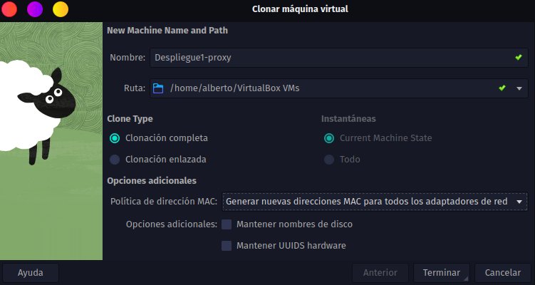
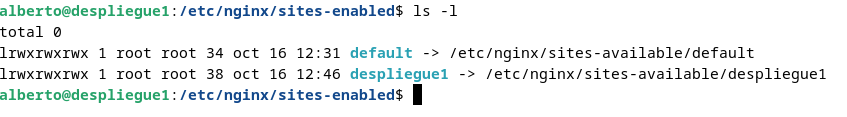
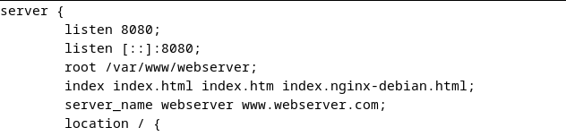
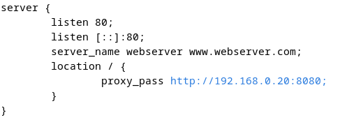
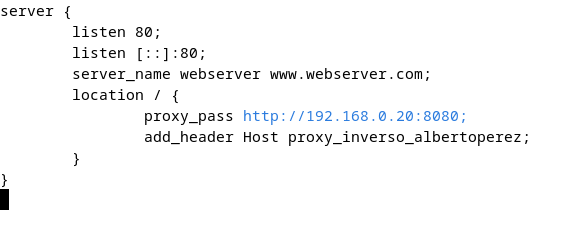
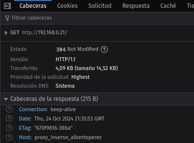

Práctica 2.3 - Proxy inverso con Nginx
Clonación de MV
Para crear un servir de proxy inverso, en primer lugar necesitaremos una nueva MV que cumpla con este rol. Para ello, clonamos la máquina virtual en la que ya teníamos configurado Nginx, de manera que tendremos dos máquinas virtuales idénticas:

Cambios en la MV con rol de Server Web
Los cambios de este apartado se realizan sobre la MV que vaya a funcionar como servidor web, es decir, la que se enfoca a alojar los datos de nuestra página.
Para ello cambiaremos el nombre de nuestra página a 'webserver', tanto del directorio en /var/www que contiene los archivos de la página como en el archivo de configuración en /etc/nginx/sites-available y el enlace simbólico a /etc/nginx/sites-enabled.
En primer lugar, ejecutamos:
cd /var/www
sudo mv despliegue1/ webserver/
A continuación, para listar los enlaces simbólicos y comprobar sus nombres podemos ejecutar:
cd /etc/nginx/sites-enabled
ls -l

A continuación eliminamos el symlink (en mi caso se llama despliegue1 porque es el nombre que le di a mi página) con el comando:
sudo unlink despliegue1
Ahora cambiamos el nombre del sitio a 'webserver' en el archivo de configuración de la página. Con:
cd /etc/nginx/sites-available
mv despliegue1 webserver
cambiamos el nombre del archivo en sí. Realizamos el mismo cambio dentro del archivo de la siguiente manera:

[!NOTE] También se podría realizar un cambio similar en /etc/hosts pero no es estrictamente necesario para el funcionamiento del servidor.
Realizados los cambios sobre el archivo de configuración, creamos un nuevo enlace simbólico ejecutando:
sudo ln -s /etc/nginx/sites-available/webserver /etc/nginx/sites-enabled
Reiniciamos Nginx y comprobamos que funciona sin errores con:
sudo systemctl restart nginx
sudo nginx -t
Cambios en la MV con rol de Servidor de Proxy Inverso
Los cambios de este apartado se realizan sobre la MV que vaya a funcionar como servidor proxy, es decir, la que se encuentra entre servidor y cliente y redirige las peticiones.
Cambiaremos el contenido del archivo de configuración /etc/nginx/sites-available para que redirija las peticiones que reciba al Servidor Web.

[!IMPORTANT] Hay que tener especial cuidado con las IPs que estamos utilizando ya que trabajamos con tres máquinas distintas. En mi caso son 192.168.0.20 (Webserver), 192.168.0.21 (Proxy) y 192.168.0.13 (Máquina anfitriona).
Ahora, si buscamos en el navegador de nuestra máquina anfitriona "192.168.0.21:80", se enviará una petición al proxy y será redirigida al servidor web. Podemos comprobar que la petición haya pasado por ambos servidores leyendo el archivo /var/log/nginx/access.log en ambas máquinas.
También podemos comprobarlo añadiendo una cabecera a la petición desde el servidor proxy, añadiendo una línea más al archivo de configuración:

Ahora, si inspeccionamos la página al entrar desde la máquina anfitriona:

Por lo que queda comprobado que el servidor proxy está funcionando sin problemas.